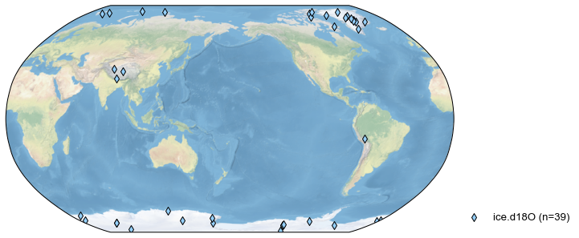
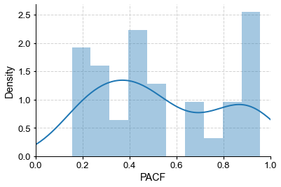
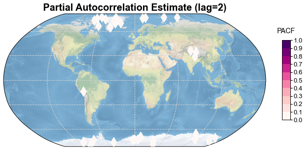
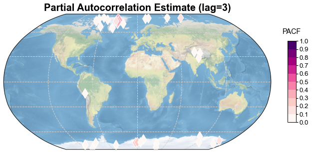

Detecting the persistence in pseudo-icecore d18O records
Contents
Detecting the persistence in pseudo-icecore d18O records#
In this tutorial, we detect the biological memory in the trees (using the TRW data) in PAGES2k.
[1]:
%load_ext autoreload
%autoreload 2
import cfr
import pandas as pd
import numpy as np
import os
from tqdm import tqdm
from statsmodels.tsa import stattools as st
import warnings
warnings.filterwarnings('ignore')
Data preparation#
Proxy#
[3]:
pdb = pd.read_pickle('./data/pseudoPAGES2k/pseudo.ice.d18O.pkl')
fig, ax = pdb.plot()

Calculate the PACF for each site#
[4]:
pacf = {}
for pid, pobj in pdb.records.items():
pacf[pid] = st.pacf(pobj.value, nlags=10)
[5]:
for k, v in pacf.items():
if v[1] > 0.9:
print(k, v[1:4])
pseudo_Ant_020 [ 0.91469 -0.64647621 0.20521066]
pseudo_Arc_028 [ 0.91335999 -0.69389298 0.32781717]
pseudo_Ant_005 [ 0.91469 -0.64647621 0.20521066]
pseudo_Ant_016 [ 0.95817826 -0.34982359 0.03095069]
pseudo_Ant_015 [ 0.95817826 -0.34982359 0.03095069]
pseudo_Ant_014 [ 0.93819743 -0.21536989 -0.03096704]
pseudo_Ant_021 [ 0.94408608 -0.45224071 0.09038473]
[6]:
pacf_lag = {}
pacf_lag[1] = []
pacf_lag[2] = []
pacf_lag[3] = []
lats = []
lons = []
for pid, pobj in pdb.records.items():
pacf_tmp = st.pacf(pobj.value, nlags=10)
pacf_lag[1].append(pacf_tmp[1])
pacf_lag[2].append(pacf_tmp[2])
pacf_lag[3].append(pacf_tmp[3])
lats.append(pobj.lat)
lons.append(pobj.lon)
[10]:
import seaborn as sns
pacf_list = []
for k, v in pacf.items():
pacf_list.append(v[1])
ax = sns.distplot(pacf_list, bins=10)
ax.set_xlabel('PACF')
ax.set_xlim(0, 1)
[10]:
(0.0, 1.0)

[7]:
levels = np.arange(0, 1.1, 0.1)
cbar_ticks = np.arange(0, 1.1, 0.1)
cbar_title = 'PACF'
cmap = 'RdPu'
for i in range(1, 4):
fig, ax = cfr.visual.plot_scatter_map(
pacf_lag[i], lats, lons, marker='d', title=f'Partial Autocorrelation Estimate (lag={i})',
cbar_ticks=cbar_ticks,
cbar_title=cbar_title,
levels=levels,
cmap=cmap,
)
cfr.showfig(fig)
cfr.savefig(fig, f'./figs/pseudo.ice.d18O.pacf_lag{i}.pdf')

Figure saved at: "figs/pseudo.ice.d18O.pacf_lag1.pdf"

Figure saved at: "figs/pseudo.ice.d18O.pacf_lag2.pdf"

Figure saved at: "figs/pseudo.ice.d18O.pacf_lag3.pdf"
[ ]: